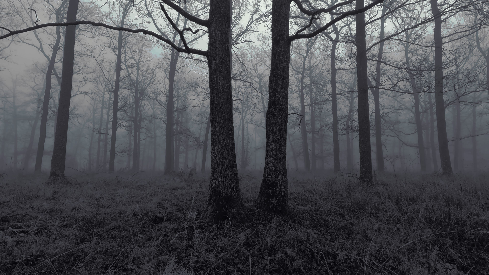

December 1980.

The Rendlesham Forest incident was a series of reported sightings of unexplained lights near Rendlesham Forest in Suffolk, England, in late December 1980. It happened just outside RAF Woodbridge, then used by the United States Air Force, and has become the most famous alleged UFO event in the UK, sometimes nicknamed "Britain's Roswell."
Around 3:00 a.m. on December 26, a security patrol near the base's east gate saw lights apparently descending into the forest. Servicemen initially thought an aircraft had crashed, but according to later accounts they found a glowing, metallic-looking object that seemed to move through the trees, while servicemen reported animals on a nearby farm making unusual noise. One airman, Staff Sergeant Jim Penniston, later claimed to have touched a "craft of unknown origin," though no one else corroborated this. In daylight, servicemen found three small ground impressions and some burn marks and broken branches, which local police thought could have been made by an animal.
Two nights later, deputy base commander Lieutenant Colonel Charles Halt led a follow-up investigation, recording his observations on a micro-cassette. His team took radiation readings at the site that were slightly above background level, saw a flashing red light across a field to the east, and later noticed several star-like lights in the sky, one of which seemed to hover for hours and occasionally beam down light. Halt sent a memo detailing the event to the UK Ministry of Defence, which examined the report but concluded the sightings were of "no defense significance" and posed no threat to national security.
Skeptics have offered a consistent set of explanations. The initial 3:00 a.m. sighting coincided with a bright meteor fireball seen over southern England, a common source of UFO reports. Skeptics later demonstrated that the flashing light on the second night matched the exact direction and five-second flash rate of the Orfordness Lighthouse. The ground marks were identified by police and foresters as rabbit diggings, and Halt's "star-like" lights coincided with the positions of bright stars, including Sirius. Other proposals include a hoax and a downed Soviet satellite, though neither has supporting evidence. Even Jenny Randles, who co-wrote the first book on the case, concluded that no unearthly craft were seen and that the events were largely misperceptions of everyday phenomena under unusual circumstances.
The incident remains a popular attraction. In 2005 the Forestry Commission created a "UFO Trail" in Rendlesham Forest because of public interest, and in 2014 a sculpture inspired by purported sketches of the craft was installed at the end of it.